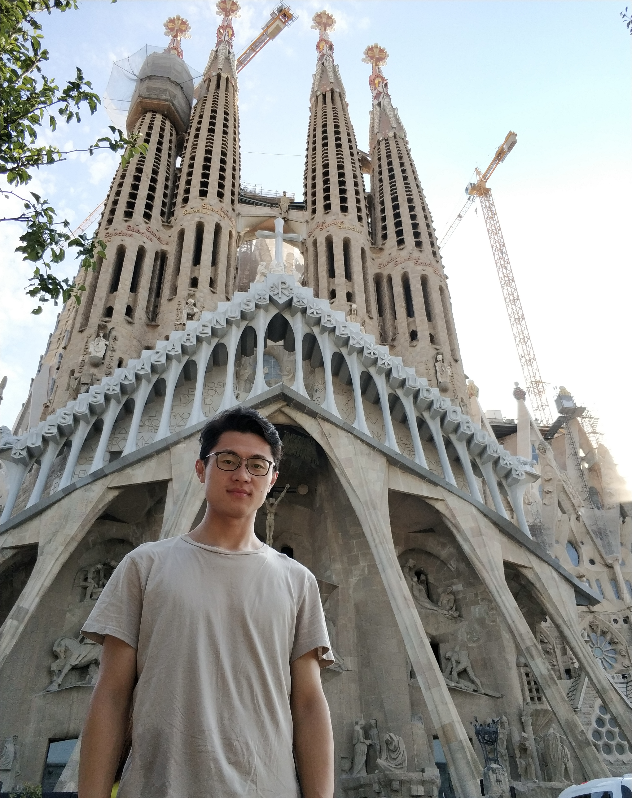

|
Jingzhou Chen (陈璟洲)
|
 |
Ph.D, Lecturer,
School of Computer Science and Engineering,
Nanjing University of Science and Technology,
200 Xiaolingwei Street, Xuanwu District,
Nanjing, Jiangsu, China
E-mail: jzchen@njust.edu.cn
|
Biography
I received my bachelor's degree from the school of computer science and technology, Sichuan University, in June 2016. From 2016 to 2022, I pursued my Ph.D. degree in the college of computer science at Zhejiang University and graduated in March 2022.
In 2022.04-2023.06, I worked as a senior computer vision engineer with the Security and Risk Management Group, Ant Group, China, where my work aimed to manage the risk from the image content. From 2023.06, I am a Lecturer at School of Computer Science and Engineering, Nanjing University of Science and Technology.
My research interests lie in computer vision and remote sensing image analysis.
Research
Computer Vision: Hierarchical Multi-Granularity Classification
Machine Learning: Deep Learning, Matrix/Tensor Decomposition, Dictionary Learning
Remote Sensing Image Analysis: Object Detection, Incremental Learning
Working Experience
-
2022.04-2023.06. Senior Computer Vision Engineer, Security and Risk Management Group, Ant Group Co., Ltd.
2023.06-. Lecturer, School of computer science and engineering, Nanjing University of Science and Technology.
Education
Selected Publications
-
Semantic Guided Level-Category Hybrid Prediction Network for Hierarchical Image Classification
Peng Wang, Jingzhou Chen, Yuntao Qian*
International Journal of Wavelets, Multiresolution and Information Processing, 2023. [PDF]
-
Label Relation Graphs Enhanced Hierarchical Residual Network for Hierarchical Multi-Granularity Classification
Jingzhou Chen, Peng Wang, Jian Liu, Yuntao Qian*
IEEE Conference on Computer Vision and Pattern Recognition (CVPR), 2022. [PDF] [code]
-
Hierarchical Multilabel Ship Classification in Remote Sensing Images Using Label Relation Graphs
Jingzhou Chen, Yuntao Qian*
IEEE Transactions on Geoscience and Remote Sensing (TGRS), 2021. [PDF] [code]
-
Incremental Detection of Remote Sensing Objects With Feature Pyramid and Knowledge Distillation
Jingzhou Chen, Shihao Wang, Ling Chen, Haibin Cai, Yuntao Qian*
IEEE Transactions on Geoscience and Remote Sensing (TGRS), 2020. [PDF]
-
Hierarchical Multi-Label Ship Recognition in Remote Sensing Images Using Label Relation Graphs
Jingzhou Chen, Yuntao Qian*
IEEE International Geoscience and Remote Sensing Symposium (IGARSS), 2021. [PDF]
-
Deep Tensor Factorization for Hyperspectral Image Classification
Jingzhou Chen, Wei Zhang, Minchao Ye, Yuntao Qian*
IEEE International Geoscience and Remote Sensing Symposium (IGARSS), 2018. [PDF] [code]
-
Graph Regularized Autoencoder Based Feature Extraction for Hyperspectral Image Classification
Xiaotian Fan, Jingzhou Chen, Yuntao Qian*
IEEE International Geoscience and Remote Sensing Symposium (IGARSS), 2021. [PDF]
-
Multi-Label Remote Sensing Image Classification with Deformable Convolutions and Graph Neural Networks
Yingyu Diao, Jingzhou Chen, Jun Zhou, Yuntao Qian*
IEEE International Geoscience and Remote Sensing Symposium (IGARSS), 2020. [PDF]
-
Superpixel-Based Nonnegative Tensor Factorization for Hyperspectral Unmixing
Fengchao Xiong, Jingzhou Chen, Jun Zhou, Yuntao Qian*
IEEE International Geoscience and Remote Sensing Symposium (IGARSS), 2018. [PDF]
-
Deconv R-CNN for Small Object Detection on Remote Sensing Images
Wei Zhang, Shihao Wang, Sophanyouly Thachan, Jingzhou Chen, Jun Zhou, Yuntao Qian*
IEEE International Geoscience and Remote Sensing Symposium (IGARSS), 2018. [PDF]
Note: * indicates the corresponding author.
Academic service
Reviewer
IEEE Transactions on Geoscience and Remote Sensing (TGRS)
IEEE Conference on Computer Vision and Pattern Recognition (CVPR)
IEEE International Conference on Multimedia and Expo (ICME)
International Conference on Pattern Recognition (ICPR)
Asian Conference on Computer Vision (ACCV)
Projects
Image Content Security Management, 04.2022-06.2023
Manage terrorful, bloody, violent, and other risky images by designing multi-label and hierarchical multi-granularity methods to exploit relations among risks
Develop general representations that can adapt to different downstream tasks by utilizing vision-language and other multi-modal data
Arbitrary-oriented Ship Detection in Optical Remote-sensing Images, 06.2019-05.2021
Propose incremental detection of remote sensing objects with feature pyramid and knowledge distillation to detect new classes
Propose hierarchical multi-granularity ship recognition using label relation graphs to exploit samples with multi-granularity labels
Awards
Outstanding Graduate Student of Zhejiang University, 2018-2019
The 2nd Prize in the 17th National Robotics Championship and the 6th International Humanoid Robotics Olympiad, 07.2015
The 3rd Prize in the 14th RoboMaster Robotics Competition, 05.2015
Outstanding Student of Sichuan University, 2014
The 1st Prize in the 9th "Challenge Cup" Simulation Robot Soccer Competition of Sichuan University, 10.2014
A brief cv.
|